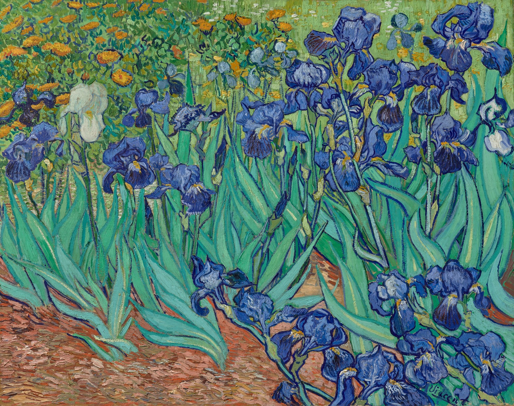

鸢尾花 Irises
梵高 · 1889年5月 · 洛杉矶盖蒂博物馆
Vincent van Gogh · May 1889 · J. Paul Getty Museum, Los Angeles
图片：盖蒂博物馆开放内容，公有领域 / Image: Getty Open Content, public domain

发现 · Discover
花园里的第一个早晨 The first morning
梵高住进疗养院后，早餐后在花园里一眼看到了这丛刚开的鸢尾，很快就开始画它。
Soon after arriving at the asylum, he spotted these irises in flower in the garden after breakfast, and soon began to paint them.
原本是紫色 Once violet
这些蓝色的鸢尾原本是紫色的，是用蓝色和红色颜料混出来的。红色褪了，就变成了今天的蓝。
These blue irises were once violet, mixed from blue and red pigments. As the red faded, they turned blue.
一朵白色的 The white one
在一片蓝紫色里，有一朵白色的鸢尾。
Among all the blue and violet, there is a single white iris.
不那么悲伤 Not so sad
到疗养院两周后，他写信告诉提奥：“考虑到生活主要是在花园里，这里并不那么悲伤。”
Two weeks after arriving, he wrote to Theo: "Considering that life happens above all in the garden, it isn't so sad."
避雷针 A lightning conductor
梵高把作画称为“疾病的避雷针”。他相信，只要继续画画，就能保护自己。
Van Gogh called painting "the lightning conductor for my illness". He believed that as long as he kept painting, it would protect him.
充满空气和生命 Full of air and life
提奥把这幅画送去巴黎展览，写信告诉梵高：“它从远处就吸引人的目光，是一幅充满空气和生命的美丽习作。”
Theo sent the painting to an exhibition in Paris and wrote to Vincent: "It strikes the eye from afar. It is a beautiful study full of air and life."
故事 · The story
ACT I 第一幕 · 花园 The garden
1889年5月，梵高自愿住进圣雷米的疗养院。刚到不久，他就在花园里画下了这丛鸢尾。
In May 1889, Van Gogh voluntarily entered the asylum at Saint-Rémy. Soon after arriving, he painted this clump of irises in the garden.
1889年5月 · 洛杉矶盖蒂博物馆 / May 1889 · J. Paul Getty Museum, Los Angeles
ACT II 第二幕 · 第一次展览 His first exhibition
那年9月，提奥把它送到巴黎的独立艺术家沙龙。这是梵高第一次参加公开展览的两幅作品之一。它的第一位主人是评论家奥克塔夫·米尔博，他写道：“他多么懂得花的精妙！”
That September, Theo sent it to the Salon des Indépendants in Paris, one of two works in Van Gogh's first public exhibition. Its first owner, the critic Octave Mirbeau, wrote: "How well he understood the exquisite nature of flowers!"
1889年5月 · 洛杉矶盖蒂博物馆 / May 1889 · J. Paul Getty Museum, Los Angeles
ACT III 第三幕 · 一年后 A year later
整整一年后，他又在鸢尾开得最好的时候画了一次。1990年，盖蒂博物馆买下了这幅画。
Exactly a year later, he painted irises again, when they were at their best. In 1990, the Getty Museum acquired this painting.
1889年5月 · 洛杉矶盖蒂博物馆 / May 1889 · J. Paul Getty Museum, Los Angeles
考虑到生活主要是在花园里，这里并不那么悲伤。 Considering that life happens above all in the garden, it isn't so sad.
作品档案 · Artwork record
| 画家（生卒年） · Artist (dates) | 文森特·梵高（1853–1890） / Vincent van Gogh (1853–1890) |
|---|---|
| 画名 · Title | 鸢尾花 / Irises |
| 年份 · Date | 1889年5月，圣雷米 / May 1889, Saint-Rémy |
| 材质 · Medium | 布面油画 / Oil on canvas |
| 尺寸 · Dimensions | 74.3 × 94.3 cm |
| 收藏地 · Collection | 洛杉矶盖蒂博物馆（1990年起） / J. Paul Getty Museum, Los Angeles (since 1990) |
关于画家 · About the artist
文森特·梵高（1853–1890），荷兰画家。他将近27岁才开始画画，短短十年留下了大量作品。1888年他来到法国南部的阿尔勒，在那里画出了许多最著名的画。
Vincent van Gogh (1853–1890) was a Dutch painter. He began painting at around 27 and left a huge body of work in just ten years. In 1888 he moved to Arles in the south of France, where he painted many of his best-known works.
更多梵高的画 · More by Vincent van Gogh